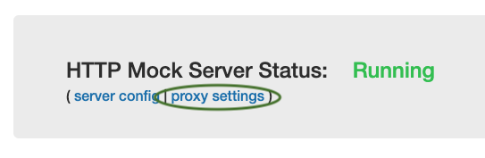
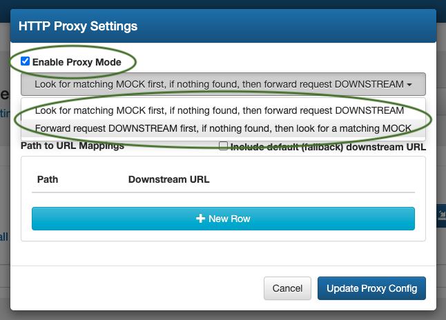
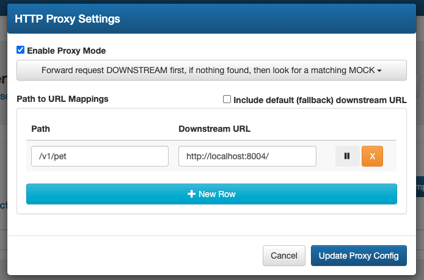
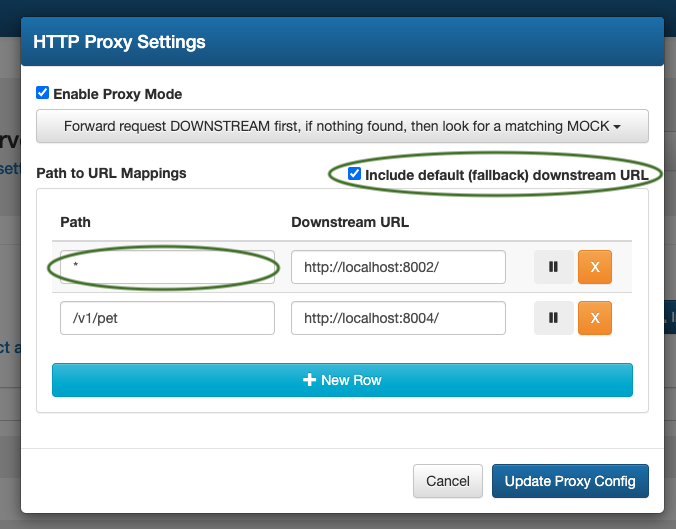
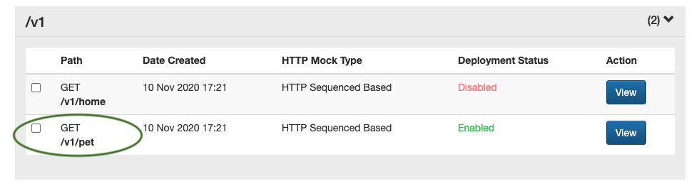
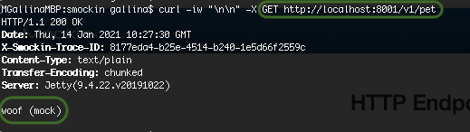
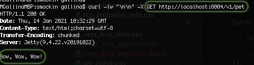
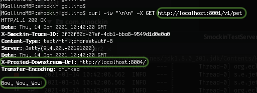

Enabling & Configuring the Proxy Server
As of
version 2.9.0, sMockin can be run as a proxy server allowing you to situate sMockin between your client devices (mobile, web) and any number of backend API applications (i.e micro services).
From here sMockin is able to intercept requests and switch out any missing or existing API endpoints with whichever mocked responses you like.
To enable this mode, click on
proxy settings from the dashboard

From the panel, tick the
Enable Proxy Mode checkbox and then select which way round you would like mocks to be intercepted.
(In this example we will the approach
Forward request DOWNSTREAM first, if nothing found, then look for a matching MOCK'.)

Next click on the
+ New Row button and enter a
Path to match requests on and the
Downstream URL to pass the request
down to in the row that appears.
(In this example, I have a web server running on port
8004 with a
GET /v1/pet API endpoint.)

With the current setup the proxy server will only intercept requests to
/v1/pet and attempt to pass these downstream to
http://localhost:8004.
In the event the endpoint
http://localhost:8004/v1/pet returns a 404, sMockin will then look for a matching mock and return that instead.
Should you need the proxy server to pass
all requests to a downstream server then please follow the next optional step below.
(Optional)
To add a default backend server, that all requests will be routed to, tick the
include default (fallback) downstream URL checkbox.
An entry will appear in the list with
* as the path and from here you can enter your chosen server address.

Lastly, click the
Update Proxy Config button to save all changes.
NOTE if already running, then this will cause sMockin server to restart.
The Proxy Server in Action
To demonstrate how the proxy server behaves, consider the following mock
GET /v1/pet which returns the
'plain/text' response body
woof (mock).

With the proxy server disabled a standard call to GET
http://localhost:8001/v1/pets would normally return the following result.

Having started up a small standalone web application on port
8004 a call to the API endpoint GET
http://localhost:8004/v1/pets
returns the following.

Lastly with the proxy server enabled in sMockin, a call to the GET
http://localhost:8001/v1/pets mock now results in the request
being passed through to the standalone web application (on
8004) and the response returned (from the standalone server) being passed
back to the caller.

To help with tracking proxied traffic in sMockin, a response header with the destination URL
X-Proxied-Downstream-Url:
is added to all traffic served through the proxy server.
You can also use the
HTTP Live Feed detailed in the next section to help track proxied traffic.